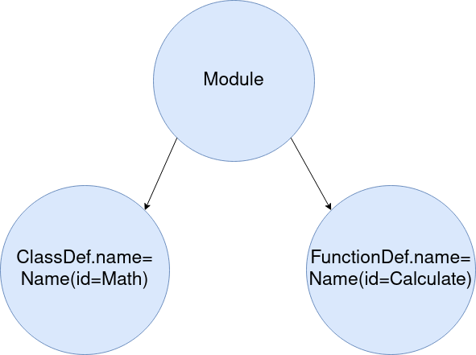

This article will explain what PUME (Python Universal Mutation Engine) is and how it works and after that some examples of use will be given.
Introduction
PUME is a tool that randombly modifies the source code of a program made with Python without change the orginal features. This is mainly achived by doing modifications in the Abstract Syntax Tree (AST) of the program but it should be noted that exist a modification that is made directly in the source code. The modifications performed in the AST are:
- Change the names of the classes, functions and variables (both local and global).
- Change the possition of the functions.
- Add randombly the reserved word “pass” in the code.
- Change the integers by a mathematical expression that has the same result.
- Change an string by an addition of substrings.
The modification made directly in the source code is add mono-line comments with irrelevant content in random lines. This is made this way because in the AST of Python comments are not represented.
Modifications on AST
This section will discuss in depth the modifications that PUME is able to make and it will be shown the impact in the AST.
Name changing
This feature consists in the detection of all the names of variables, functions and classes in the source code and change them without break the program. The following code snippets show the effects of this modification. The first snippet is the original code and the second is the modified one:
class Math:
def add(a, b):
return a + b
def calculate():
bananas_paul = 4
bananas_john = 5
math = Math()
total_bananas = math.add(bananas_paul, bananas_john)
return total_bananas
calculate()
class Algebra:
def sum(number_1, number_2):
return number_1 + number_2
def count():
grapes_ann = 4
grapes_emma = 5
algebra = Algebra()
total_grapes = algebra.sum(grapes_ann, grapes_emma)
return total_grapes
count()
In the AST modifications are performed in the ast.Name nodes changing the value of the attribute id. In the following images it is shown the effect in the AST:
|  |
|---|
| Original AST |
| Modified AST |
Change possition of functions
As Python allows you to call functions regardles of the location in a file, then it is possible to change the function’s possition without change the program features. This modification also applies to the functions of a class. The following code snippets show the effects of this modification. The first snippet is the original code and the second is the modified one:
def add(a, b):
return a + b
def sub(a, b):
return a – b
def multiply(a, b):
return a * b
def multiply(a, b):
return a * b
def add(a, b):
return a + b
def sub(a, b):
return a – b
In the AST the modifications are made in the body attribute of the classes ast.Module and ast.ClassDef changing the possition of the ast.FunctionDef nodes. In the following images it is shown the effect in the AST:
 |
|---|
| Original AST |
 |
|---|
| Modified AST |
Add “pass”
The reserved word “pass” has no effect on the functionality of a program, but in Python AST it has representation. This implies that the reserved word “pass” can be added randombly in the AST without consequences. The following code snippets show the effects of this modification. The first snippet is the original code and the second is the modified one:
def add(a, b):
return a + b
def sub(a, b):
return a – b
def multiply(a, b):
return a * b
pass
pass
def add(a, b):
pass
return a + b
def sub(a, b):
return a – b
pass
def multiply(a, b):
pass
pass
return a * b
In the AST the modifications are made in the body attribute of the classes ast.Module, ast.ClassDef, ast.FunctionDef, ast.AsyncFunctionDef, ast.If, ast.For, ast.While, ast.Try and ast.AsyncFor. In the following images it is shown the effect in the AST:
 |
|---|
| Original AST |
 |
|---|
| Modified AST |
Change integers
This feature consists in the creation of a mathematical expression from an integer that has the same result as the integer. The following code snippets show the effects of this modification. The first snippet is the original code and the second is the modified one:
water = 15
intake = -5
water = 35-19+678//20-34
intake = 789-231%534-563
In the AST what we get is change the ast.Constant classes by ast.BinOp ones. In the following images it is shown the effect in the AST:
 |
|---|
| Original AST |
| Modified AST |
Change strings
This feature consist in generate a summation of strings from an string. The following code snippets show the effects of this modification. The first snippet is the original code and the second is the modified one:
name = 'Adela'
surename = 'Mazaricos'
name = 'Ad' + 'ela'
surename = 'Maza' + 'ri' + 'cos'
In the AST what we get is change the ast.Constant classes by ast.BinOp ones. In the following images it is shown the effect in the AST:
 |
|---|
| Original AST |
 |
|---|
| Modified AST |
Other features
The modification of AST is the most interesting part of the tool, but it is worth mentioning some of the features whose objective is to facilitate the usability of the tool:
- Multifile: The tool can handle multiple files at the same time and also takes into account if the files import functions, variables or classes between them.
- Reparation of integers and strings: This feature consist in, before make the changes in the AST, search for mathematical expressions and summations of strings to return it back to its original value. This way, a disproportionate growth of the final result is avoided in the case of executing the tool over the result of a previous execution.
- Deleting “pass”: Before adding the reserved word “pass” in the code, all occurrences in the AST are searched and deleted. This way, a disproportionate growth of the final result is avoided in the case of executing the tool over the result of a previous execution.
Limitations
Even if you do not like to talk about the bad things of something, you have to take it into account to get the most out of it. Below are the limitations of the program:
- Due to the way real numbers are handled in Python, they will not be mutated. In the following image you can see the type of errors that can happen:

- Due to typing in Python is dynamic, you cannot figure out what type variable the programmer is using until the program is running. So when PUME is changing names of functions and two classes have the same name for a function, it does not know which function belongs to which class. So the programmer cannot create two functions with the same name in different classes. This also applies to the standard libraries. In the following example, the programmer is creating a class with a function that shares name with other function of the standard library. In this situation, PUME cannot differentiate which function is being called.
class MyClass:
def __init__(self):
self.data = ["a", "b", "c", "d"]
def find(self, a):
return self.data.index(a)
my_string = "The car is big"
my_string = my_string.find("car")
my_class = MyClass()
position = my_class.find("a")
In order to avoid a bug in the mutated program, the programmer has to change the name of the class function that he created:
class MyClass:
def __init__(self):
self.data = ["a", "b", "c", "d"]
def search(self, a):
return self.data.index(a)
my_string = "The car is big"
my_string = my_string.find("car")
my_class = MyClass()
position = my_class.search("a")
Examples
Finally, now that the main features of the tool have been introduced, here are a few examples of use.
Basic operation
In the following example you can see how a program is executed, how it is modified and how after the modifications the program continues to work:

Antivirus evasion
In the following example, you can see how VirusTotal detects an Impacket script as malicious, then PUME modifies it and, after that, I rescan it to see that VirusTotal no longer detects it.

Virus creation
At last, a virus called PUMA that uses the tool as an engine to mutate its own code was created. In the following video it is shown how it works:

Final words
That’s all folks! If you liked the tool or you see how to improve it, leave a comment below or open an issue in the repository.
Goodbye and see you!